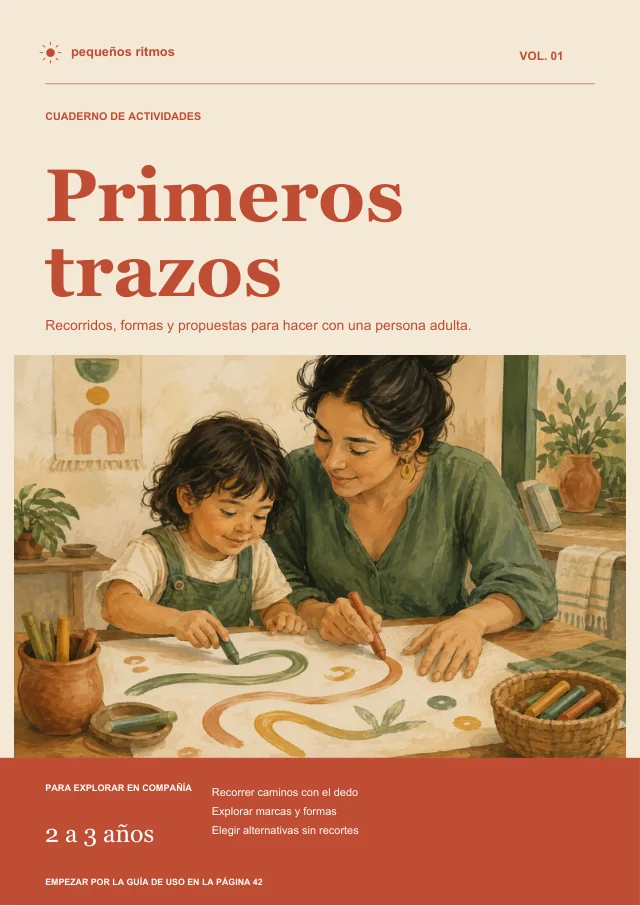
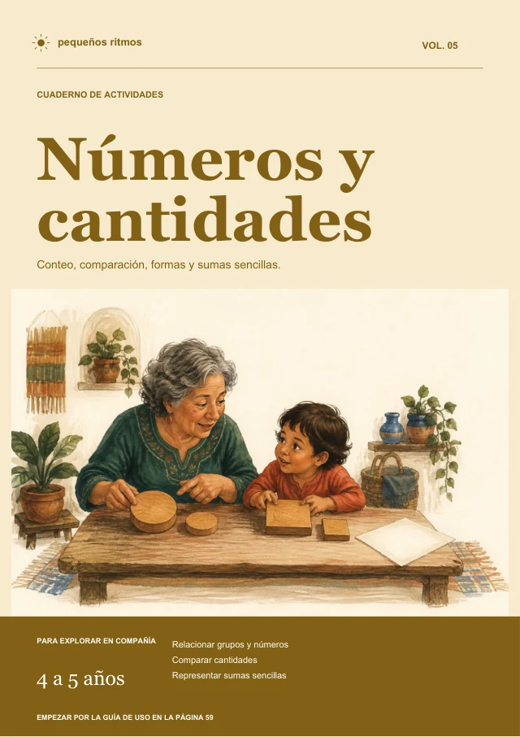
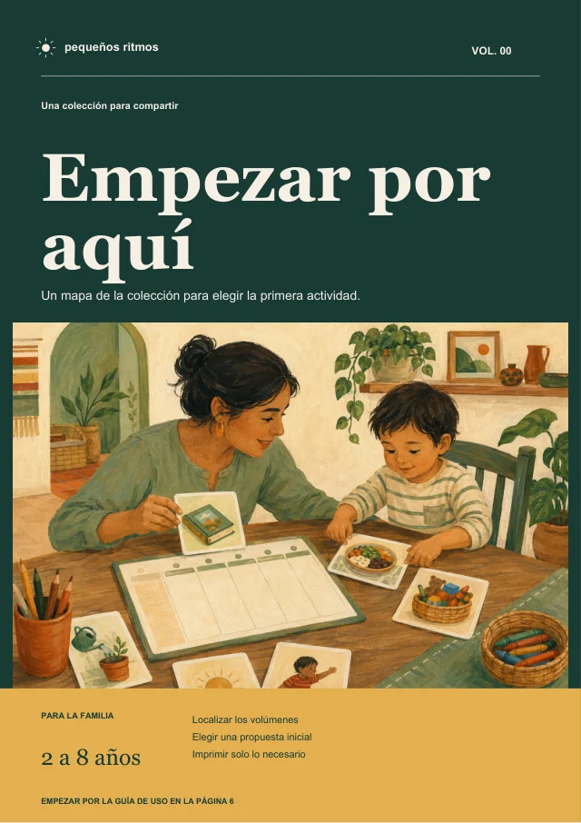
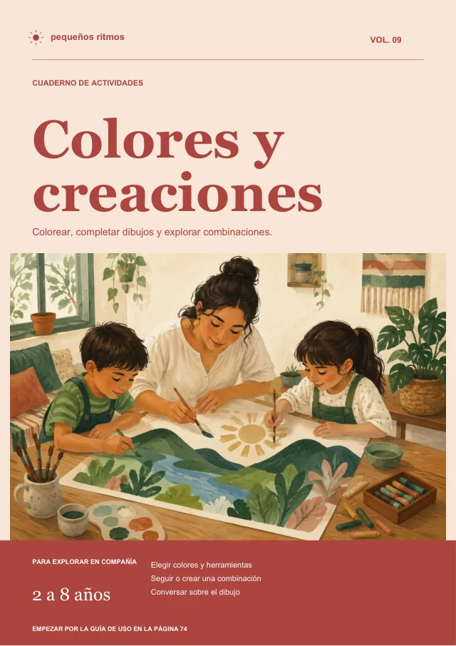
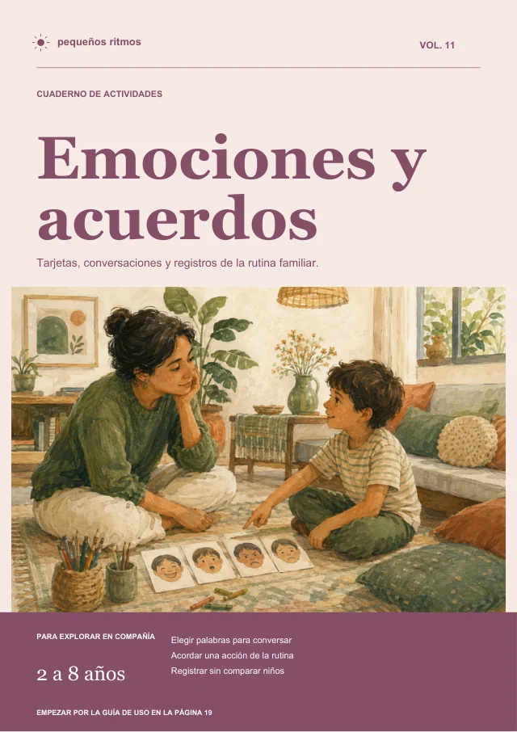
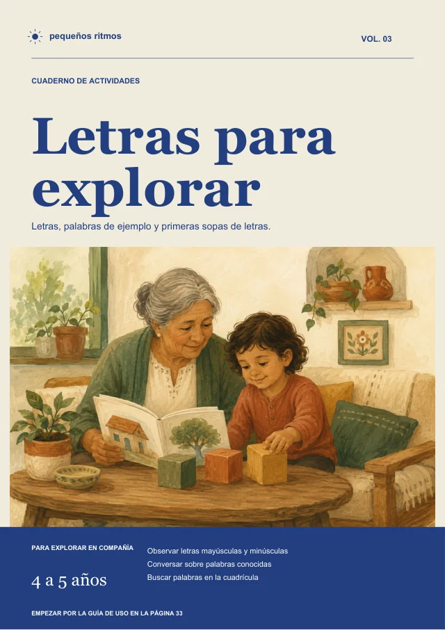
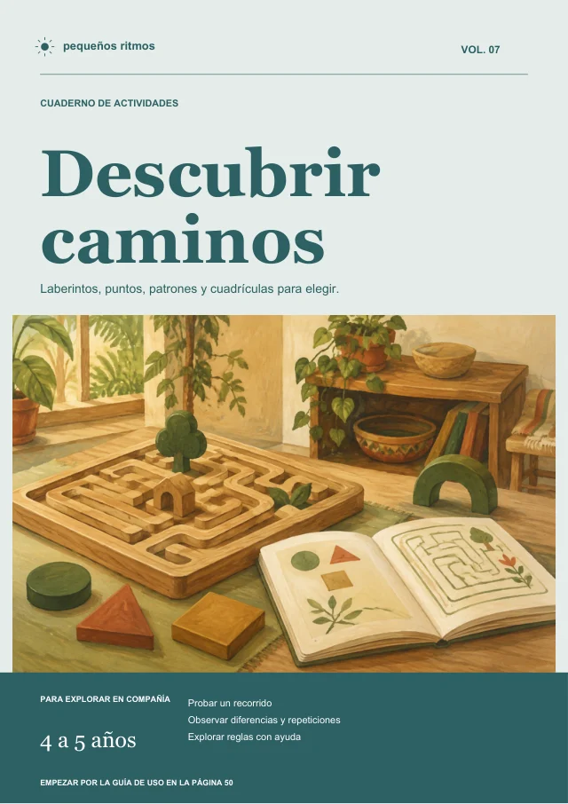

2–3 años
Trazos y caminos
Seguir líneas, recorrer caminos y explorar con el lápiz.
KIT SIN PANTALLAS · EN ESPAÑOL
Letras, números, trazos, arte y juegos de lógica para niños de 2 a 8 años. Abre el kit y encuentra tu próxima actividad en papel.





Portadas reales del kit. Recibes archivos digitales para imprimir.
DE «¿QUÉ HACEMOS?» A UNA IDEA CONCRETA
Una hoja para colorear. Un laberinto para resolver juntos. Unas tarjetas para hablar del día.
El kit reúne propuestas por edad y tema para que puedas elegir lo que encaje con su interés y con los materiales que tienes a mano.
No hay que imprimirlo todo ni completar una página. El adulto acompaña; cada niño marca su ritmo.
ESTO SÍ ESTÁ DENTRO DEL KIT
Estas son algunas de las propuestas de la colección. Abre una portada y mira una página real antes de decidir.
2–3 años
Seguir líneas, recorrer caminos y explorar con el lápiz.

4–5 años
Trazar letras y dar los primeros pasos con la escritura.
4–5 años
Contar, comparar formas y explorar sumas sencillas.

4–5 años
Buscar caminos, reconocer patrones y resolver propuestas.
2–8 años
Colorear, completar dibujos y elegir nuevas combinaciones.
2–8 años
Usar tarjetas y propuestas para conversar sobre el día.
Trazos, un laberinto y una propuesta de color. PDF gratuito, sin registro.
TODO ESTO, EN UNA SOLA COMPRA
Descarga los archivos y guárdalos para uso personal. Puedes volver a imprimir las actividades que quieras repetir.
927 páginas en total entre actividades, guías y bonos. No son 927 actividades diferentes.
17 archivos con coordinación motora, lectoescritura, matemáticas, lógica, arte, ciencias, inglés básico, emociones, rutina y bonos.
24 páginas y 16 capítulos para ayudarte a elegir y acompañar las propuestas.
74 páginas con 24 propuestas originales, rutas, adaptaciones y respuestas seleccionadas.
21 páginas con 6 biografías, referencias comentadas y adaptaciones regionales.
Los tres volúmenes complementarios suman 119 páginas. El cuaderno incluye respuestas comprobadas para 82 páginas de operaciones y sopas de letras de la colección original; no es un solucionario de todos los ejercicios. La biblioteca incluye adaptaciones para México, Colombia, Chile, Perú y Argentina. Los libros comerciales recomendados no están incluidos.
EL PUNTO DE PARTIDA LO ELIGES TÚ
La edad orienta la elección. Revisa la consigna y adáptala a lo que el niño puede y quiere hacer.
Trazos, color y propuestas sencillas, con materiales preparados por un adulto.
Actividades de escritura inicial, conteo, recorridos y lógica por nivel.
Palabras, operaciones, lógica y otros temas para seguir explorando con acompañamiento.
DE LA COMPRA A LA PRIMERA HOJA
Antes de confirmar, verás el importe final en tu moneda y los medios de pago disponibles.
Tras aprobarse el pago, usa el enlace enviado al correo de tu compra para acceder a los PDF.
En casa o en una papelería. Prepara los materiales y empieza por una sola propuesta.
La impresión, el papel y los materiales no están incluidos. No se envían libros físicos. Las actividades requieren acompañamiento adulto.
KIT SIN PANTALLAS
Ten tu colección de actividades en papel lista para elegir la próxima idea.
Portadas de los archivos incluidos.
LA COLECCIÓN COMPLETA
20 archivos PDF · En español · 2 a 8 años
Un solo pago. Sin suscripción.
Pago y entrega digital mediante Hotmart
El importe final en tu moneda, los impuestos y los medios de pago disponibles se muestran antes de confirmar la compra.
DECIDE CON TRANQUILIDAD
Si el kit no es para ti, solicita el reembolso a través de Hotmart dentro de los 7 días indicados en tu compra, con los datos de la transacción.
Consultar condiciones de compra y reembolso ↗ANTES DE DECIDIR
No. Recibes 20 archivos digitales PDF. Descárgalos e imprime las páginas que quieras. La impresión, el papel y los materiales no están incluidos.
Hay propuestas para distintas edades y niveles. La edad es una referencia: revisa la consigna y adáptala a los intereses y posibilidades del niño. Requiere acompañamiento de un adulto.
Puedes imprimir en blanco y negro o en una papelería. Cuando la actividad depende del color, revisa la clave y adapta con palabras o marcas.
Es un pago único. Puedes guardar los PDF y volver a imprimirlos para uso personal. No se permite revender ni distribuir los archivos.
Después de que Hotmart apruebe el pago. Busca el correo enviado a la dirección que usaste al comprar, también en spam. Algunos medios de pago requieren tiempo de confirmación.
Para ayuda con el material o acceso, escribe a heycleangirl@gmail.com e indica el número de transacción. Para un reembolso, solicita a Hotmart dentro de la garantía de 7 días.